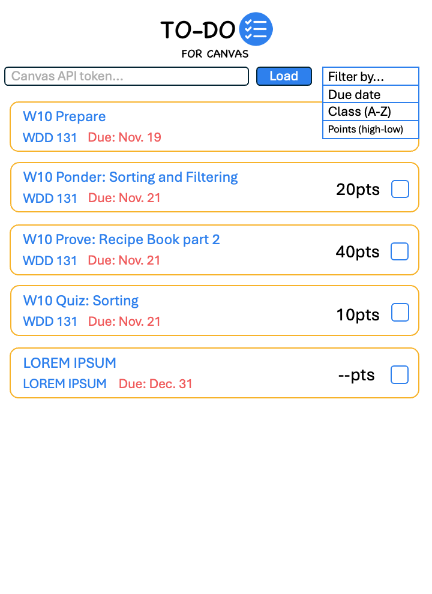

Overview
Purpose
Provide a simplified, customizable to-do list of Canvas tasks.
Audience
Students that prioritize organization in completing their assignments on Canvas.
Dynamic elements
Reordering of canvas task cards using options from a drop-down menu, manual re-ordering of cards, and task completion. Optional integration with Canvas API token.
Branding
Website Logo
Style Guide
Color Palette
Palette URL: https://coolors.co/396e94-e7c24f-a43312-381d2a-aabd8c| Primary | Secondary | Accent 1 | Accent 2 |
|---|---|---|---|
| [#2F80ED] | [#F05D5E] | [#F7B32B] |
Pseudocode for your project
RENDERING ASSIGNMENT CARDS
Create an array of sample assignment objects.
Pull properties from the assignment objects into an html template.
For each object in the array, render html for assignment cards.
Add click event listener for api token input.
If api token is entered, process it securely to pull assignments
If date range is entered, filter returned api objects by date.
replace sample array with assignment objects from api call.
FILTERING ASSIGNMENTS
if event listener click on up or down arrow button, change assignment card order value +-1.
Sort objects by order value and render.
if check mark button clicked on assignment card, display=none. (alternative: order value=null)
Sort card objects by order value and render.
If filter selected (due date, points, alphabetical) change order value.
Sort card objects by order value and render.
Wireframes
Create wireframes for your project page(s). One for each page and list them here.

Landing page
A warning box will be summoned when a user clicks into the input
box inviting them to review my code for security concerns.
"By entering your api token into the To-Do for Canvas, you agree to let
To-Do for Canvas to act in your behalf and retrieve possibly sensitive
Canvas account information. To-Do for Canvas and its developer(s)
are not responsible for exposure of sensitive data or Canvas secrets.
Your API token is not collected or stored by To-Do for Canvas,
but could be visible to browser extensions. Proceed at your own risk."